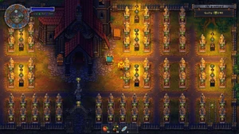
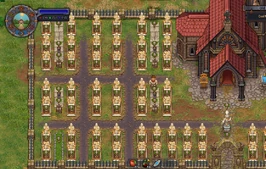

The Graveyard
| The Graveyard | |
|---|---|
Location information
| |
Buildable
|
True |
Exits
|
Church, Morgue, Apiary, Swamp, Witch Hill, Wheat Farm |
Npcs
| |
| Bishop | |
The graveyard is introduced in the tutorial. An integral part of the game is how well you "keep" or maintain your graveyard. The most important part of the graveyard is its rating. The church is located in the graveyard.
Graveyard Rating
Graveyard rating is the main factor affecting the amount of money earned by donations in weekly sermons. It is therefore desirable to have a high  .
.
There are four factors that affect quality: bushes, corpses, decor and graves.
Bushes
Bushes are present at the start of the game and do not currently regrow after being removed. Each bush has a -1  effect on rating.
effect on rating.
Corpses
The quality of a buried  corpse determines the maximum rating per grave. The number of
corpse determines the maximum rating per grave. The number of  ,
,  and
and  in the corpse rating are the basis of the quality. No grave can have a higher
in the corpse rating are the basis of the quality. No grave can have a higher  rating than the number of
rating than the number of  on that corpse. Additionally, certain autopsy operations increase the base
on that corpse. Additionally, certain autopsy operations increase the base  rating of a grave. See
rating of a grave. See  corpse for more info.
corpse for more info.
(Possible Bug Warning: If you exhume a corpse with 100% freshness from the right/east side of the graveyard, be wary of trying to improve it via autopsy. Corpses that spawned in the graveyard at the start of game may not acknowledge organs or parts added to them, effectively 'eating' the parts with no benefit. Parts can still be removed as normal. )
Decor
Decor includes things like lanterns, urns with ashes, flower beds, prayer stations, etc. Each piece of decor adds some amount of  . The fence around the whole graveyard can be repaired for +10
. The fence around the whole graveyard can be repaired for +10  and further upgraded for +20
and further upgraded for +20  .
.


Graves
Graves are an integral part of the game. Your first source of income in the game is
Burial certificates. They are obtained by burying or cremating corpses, and can be sold to Horadric at The Dead Horse for  1
1  50. This price is fix.
50. This price is fix.
Graves also have a positive or negative effect on the  rating, based on the
rating, based on the  corpse quality and grave decorations. As the maximum benefit for tombstones is +7
corpse quality and grave decorations. As the maximum benefit for tombstones is +7  and fences is +5
and fences is +5  , no grave can have a rating higher than +12
, no grave can have a rating higher than +12  , even if the
, even if the  corpse has more than 12
corpse has more than 12  . (With the Game of Crone DLC the maximum benefit for tombstones is increased to +9
. (With the Game of Crone DLC the maximum benefit for tombstones is increased to +9  and for fences to +7
and for fences to +7  resulting in a possible max. of 16
resulting in a possible max. of 16 . With the Better Save Soul DLC, more tombstones and fences are added allowing for the maximum of 26
. With the Better Save Soul DLC, more tombstones and fences are added allowing for the maximum of 26  .)
.)
Grave sites have no effect on  when placed or "planned" with the blueprint desk located in the graveyard. After being dug out for burial, the grave has a -2
when placed or "planned" with the blueprint desk located in the graveyard. After being dug out for burial, the grave has a -2  effect on quality.
effect on quality.
Grave Maintenance
Graves are in a state of disrepair in the beginning. This is made apparent during the tutorial when you are shown how to repair grave decorations. Grave decorations that have deteriorated will provide less  which in turn will provide you with less income.
which in turn will provide you with less income.
The Second time is after a cutscene with Yorick. This will occur once after you reach 100  . It will affect a couple of graves.
. It will affect a couple of graves.
Tombstones
As noted in the corpses section, the maximum  benefit of a grave cannot exceed the number of
benefit of a grave cannot exceed the number of  of the corpse buried there.
of the corpse buried there.
| Item | Quality Provided | Technology required |
|---|---|---|
| None | ||
| Wooden marker |
Graveplate | |
| Wooden cross |
Simple Gravestone | |
| Gravestone |
Simple Gravestone | |
| Stone cross |
Stone Gravestone | |
| Gravestone II |
Stone Gravestone | |
| Stone cross II |
Carved Gravestones | |
| Stone plinth |
Carved Gravestones | |
| Stone sculpture |
Grave Monuments | |
| Stone sculpture II |
Grave Monuments | |
| Marble cross |
Marble Gravestone | |
| Marble cross II |
Carved Marble Gravestones | |
| Marble plinth |
Carved Marble Gravestones | |
| Marble sculpture |
Crypts | |
| Marble sculpture II |
Crypts | |
| Unlocked with Game of Crone | ||
| Gravestone III |
Advanced Gravestones | |
| Stone sculpture III |
Stone statues | |
| Stone sculpture IV |
Stone statues | |
| Marble gravestone III |
Advanced Gravestones II | |
| Marble sculpture III |
Marble statues | |
| Marble sculpture IV |
Marble statues | |
| Unlocked with Better Save Soul | ||
| Stone Gravestones | ||
| Stone Gravestones | ||
| Marble Gravestones | ||
| Marble Gravestones | ||
For an order by  see Gravesite
see Gravesite
Fences
As with tombstones, a grave quality is only as good as the corpse in the grave.
| Item | Quality Provided | Technology required |
|---|---|---|
| None | ||
| Wooden grave fence |
Simple Gravestone | |
| Stone grave fence |
Stone Gravestone | |
| Stone grave fence II |
Carved Gravestones | |
| Marble grave fence |
Marble Gravestones | |
| Marble grave fence II |
Carved Marble Gravestones | |
| Unlocked with Game of Crone | ||
| Stone grave fence III |
Advanced Gravestones | |
| Stone grave fence IV |
Advanced Gravestones | |
| Stone grave fence V |
Advanced Gravestones II | |
| Marble grave fence III |
Advanced Gravestones II | |
| Marble grave fence IV |
Marble Fence | |
| Marble grave fence V |
Marble Fence | |
| Unlocked with Better Save Soul | ||
| Stone grave fence | ||
| Stone grave fence | ||
| Stone grave fence | ||
| Marble grave fence | ||
| Marble grave fence | ||
| Marble grave fence | ||
For an order by  see Gravesite
see Gravesite
Maximum Rating
The following table shows (without the DLC's Game of Crone or Better Save Soul) how to achieve a maximum graveyard rating (top/north to bottom/south and west/left to east/right). Instead of a lantern, a stone prayer station can be used for the same amount of  . The 2x4 lawns can be replaced by marble flagstones.
. The 2x4 lawns can be replaced by marble flagstones.
| left side | ||
|---|---|---|
| 8 x 10 - total 95 |
7 x 10 - total 88 |
8 x 10 - total 95 |
| 8 x 6 - total 55 |
7 x 6 - total 48 |
8 x 6 - total 55 |
| 8 x 6 - total 52 |
7 x 6 - total 48 |
15 x 6 - total 120 |
| right side | ||
| 3x3 + 2x2 + 3x3 + 8x6 total 83 |
7 x 10 - total 88 |
huge tree 3x3 + 2x2 + 3x3 total 28 |
| 8 x 6 - total 55 |
7 x 6 - total 48 |
8 x 6 - total 55 |
| 15 x 6 - total 120 |
7 x 6 - total 48 |
8 x 6 - total 52 |
| miscellaneous | ||
| Build stone fence 20 |
Statue of the Bishop 5 |
|
In total that's
- 160
 8×
8×
Marble columbarium - 1008 84×
Gravesite - 36 9×
Lantern or 9×
Stone prayer station - 29 9×
Lawn or 2×
Lawn plus 7×
Marble flagstones - 20 1×
Build stone fence - 5 1x Statue of the Bishop
adding up to 1258  , which seems to be the absolute maximum. Feel free to find a better solution. (Layout: https://imgur.com/a/kTP1pef)
, which seems to be the absolute maximum. Feel free to find a better solution. (Layout: https://imgur.com/a/kTP1pef)
edit: after version 1.3 a grave can have up to 16 quality, meaning new absolute maximum is 1594. (based on above layout: https://imgur.com/p5BKek1)
edit: With the new grave decorations and body part modification system in the DLCs the maximum score for a simple grave is now 26 . A perfect corpse of 26
. A perfect corpse of 26 with marble grave fence VIII and marble sculpture VI. With that in mind using any columbariums reduces your graveyard score since they only provide 20
with marble grave fence VIII and marble sculpture VI. With that in mind using any columbariums reduces your graveyard score since they only provide 20 . The layout linked above can still be used, replacing any columbariums with graves and in some spots additional lawns/marble flagstones. You'll have more empty spaces in the end but a higher score.
. The layout linked above can still be used, replacing any columbariums with graves and in some spots additional lawns/marble flagstones. You'll have more empty spaces in the end but a higher score.
edit: The real absolute maximum seems to be 2488 with 92 graves with 26  and a few decorations to fill the gaps as shown in the next images:
and a few decorations to fill the gaps as shown in the next images:



Original(not sure) design by Ciomegu on youtube: https://www.youtube.com/watch?v=wBG4m7MoTIM
(I do not recomend anyone does this because it took me like 2 real time weeks to do it and all it did was make me get 1.5 gold per sermon, The tavern made me 224 gold in one swoop since i forgot i had it while i was working on this graveyard so its realy not worth it other than for bragging rights)
Graveyard Expansion
In the beginning, the west half of the graveyard is locked. The sign there tells you to speak to the Inquisitor about this. Once you have earned 20  with him, he hands you (or sells) a
with him, he hands you (or sells) a
graveyard scroll. Return to the graveyard and use it there at the sign.
The west half is quite overgrown with a lot of shrubs and big trees. You'll need the "Woodcutter" technology to get rid of the trees. You won't get any negative  from it, but you won't be able to build anything without clearing the area first.
from it, but you won't be able to build anything without clearing the area first.
Royal Services
Once you are a preacher, you gain access to the Royal services box located outside the front door of the church. It is through this box that you interact with the bureaucratic system behind the throne.
You upgrade citizen titles by spending money on the Crown. Each title costs you a certain amount of money, but grants you access to a number of items you'll need to advance certain quests.
Exhumation Permission
| Item | Cost | Notes |
|---|---|---|
| Exhumation permission |
required to dig up a buried body. |
Corpse exhumation is only needed when a badly autopsied corpse is negatively impacting your  . To exhume a corpse, buy an
. To exhume a corpse, buy an
Exhumation permission from the church box. After you have removed the fence and the gravestone, you may select "exhume" and dig up the body.
Note: These cost  1
1  75, which is
75, which is  25 more than what you are paid for the
25 more than what you are paid for the
Burial certificate. You will earn much of the money back if you bury it again (after autopsy) or if you cremate it. So, overall it's a small loss for exhumation.
Citizen
| Item | Cost | Notes |
|---|---|---|
| Citizen | 0 | |
| Stamp |
needed to complete a quest for Horadric to craft a Package of meat | |
| Building permission |
needed to upgrade the church to a big church |
Rightful Citizen
| Item | Cost | Notes |
|---|---|---|
| Rightful Citizen | 30 | |
| Rightful citizen papers |
free | needed to preach in a big church |
| Town pass |
free | grants you access to the town |
| Trade license |
needed for the merchant's quest to open a trade office |
Aristocrat
| Item | Cost | Notes |
|---|---|---|
| Aristocrat | 65 | |
| Aristocrat papers |
free | needed to advance some quests in endgame |
| |||||